Burnout & mood
Research suggests a short group drumming program reduced burnout and improved mood in long-term care staff.
Edmonton, Alberta
We bring people together.
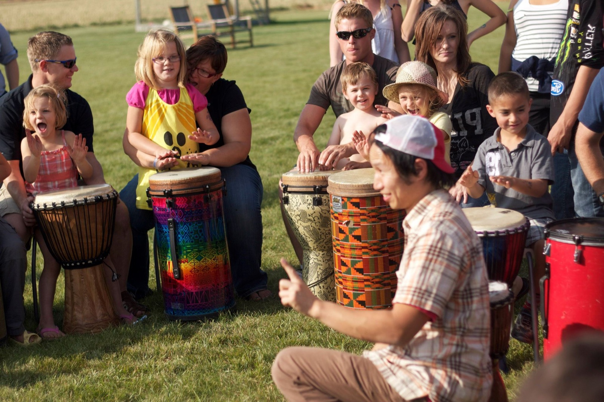
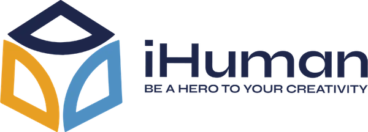
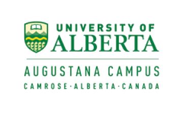
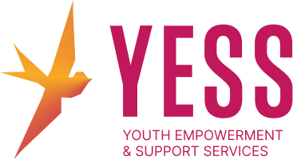
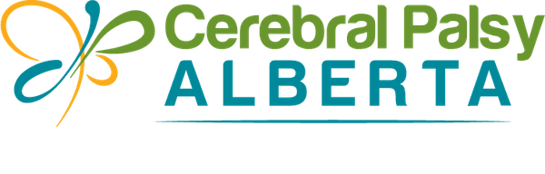
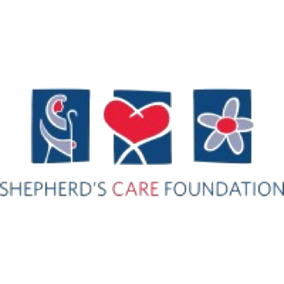
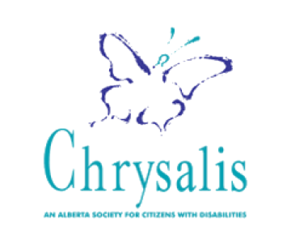
Interactive drum circles that lift people up
through the power of rhythm and music.
Watch “Come Drum with Us” with Multicultural Health Brokers1:27
Our mission
We help to create a world where people feel included and welcomed to gather and express themselves in the circle, by creating safety, building trust and having fun together.
We use the gift of rhythm and participatory music to celebrate the connections between people, recognizing that we are part of something greater, carried by a bigger song.
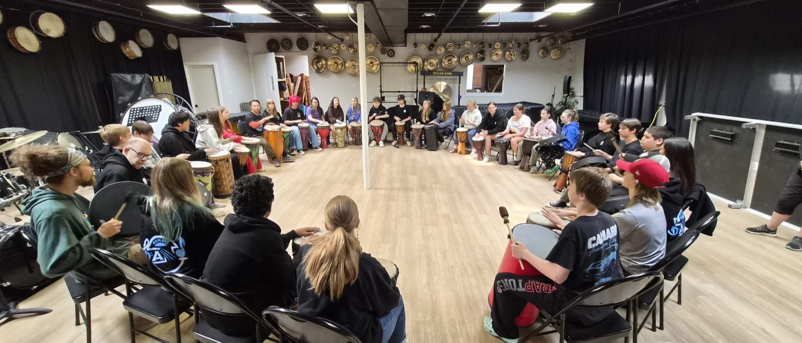
Our philosophy
“If you can walk, you can dance.
If you can talk, you can sing.”
Zimbabwean proverb
DestiNAITion Global Community Drumming Workshop
NAIT International & Intercultural Community Centre · 2023
We need both
Depth and meaning,
as well as joy and lightness.
We specialize in serving the people who care for others:
health care, social services, nonprofit, education and community teams.
A wellness day or PD day that actually restores and re-ignites the spark
in the people who hold everyone else up.
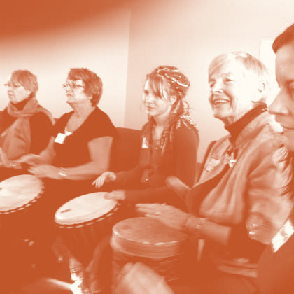
A skillful facilitator helps create a space where everyone feels safe to take a risk, laugh and be seen.
Why it mattersWhen caring teams feel safe with each other, they speak up, share the load and ask for help.
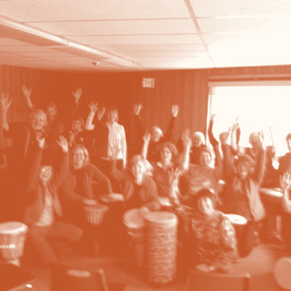
Drumming naturally transforms stress into useful energy. Laughter, movement and sound shake off the week and lift the energy in the room.
Why it mattersFor people who give all day, it’s a real reset against burnout. They return to their work lighter and more present.
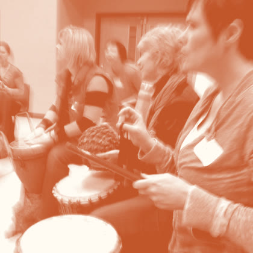
A drum circle is one of the rare moments where people listen and express themselves at the same time.
Why it mattersTeams that truly hear each other feel understood, and tension softens before it builds.
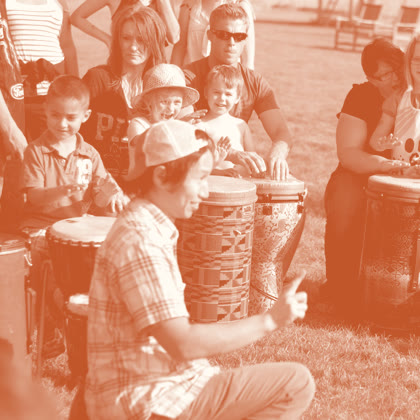
Everyone gets the opportunity to lead and to follow. Natural leaders emerge and hidden strengths surface as every person contributes to one shared rhythm.
Why it mattersCoworkers see each other in a new light, and everyone leaves knowing their part matters.
Read the articleDrum circles for corporate team building & workplace wellness →
Benefits
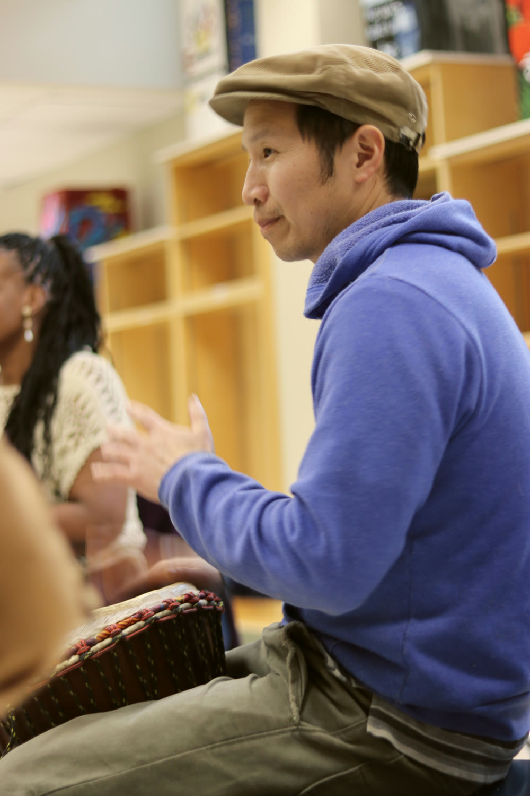
Behind the rhythm
Burnout & mood
Research suggests a short group drumming program reduced burnout and improved mood in long-term care staff.
Rhythm builds teams
Studies have found that people who move in sync cooperate more afterwards and feel more on the same team.
Older adults
Research suggests making music together, percussion included, supports mood, confidence and a sense of belonging in later life.
These are mostly small studies of group music-making, not studies of our sessions. Our circles are for wellness, connection and fun. They aren’t therapy or counselling, and they don’t replace professional mental health care.
What we believe
Celebrating Unity
through our Diversity
Team building, wellness days and PD days for caring teams, corporate and government workplaces, and any business that wants its people to feel like a team again.
We also bring the rhythm to conferences, energizers and fundraisers.
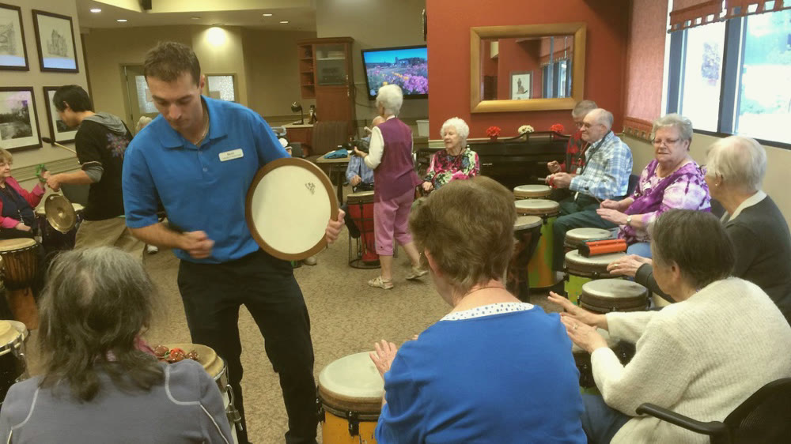
Staff wellness days, stress relief and energizers for nurses, caregivers and care teams. Joyful drum circles for residents in seniors’ residences, continuing care, hospice and rehab, adapted for every ability.
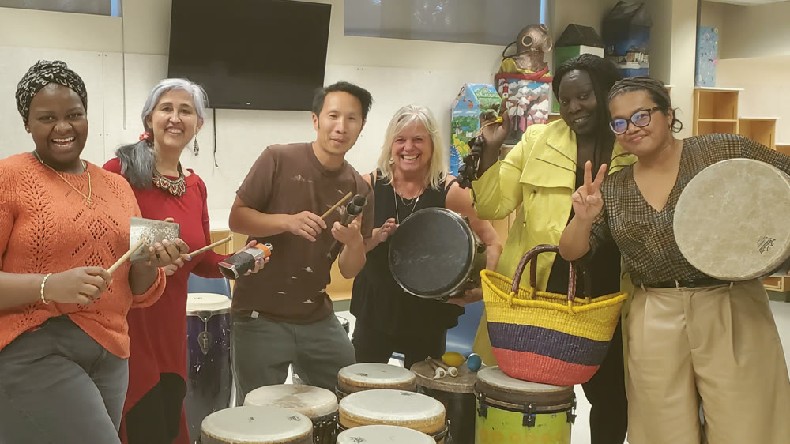
Team building and restorative PD days for frontline teams carrying heavy work, supporting staff mental health and wellness: community agencies, mental health and family services, newcomer and multicultural groups, volunteers and boards. Nonprofit rates available.
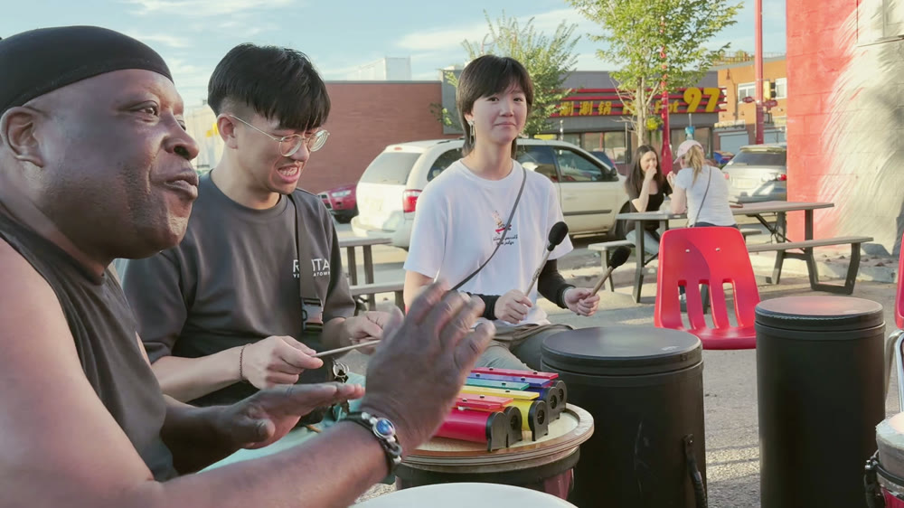
Team building, energizers and workplace wellness for corporate and government teams: staff PD days, retreats, conferences, holiday and Christmas parties, youth groups and community celebrations, inclusive for every background.
Clients & past events
20 years of circles with health, government, education and community organizations.
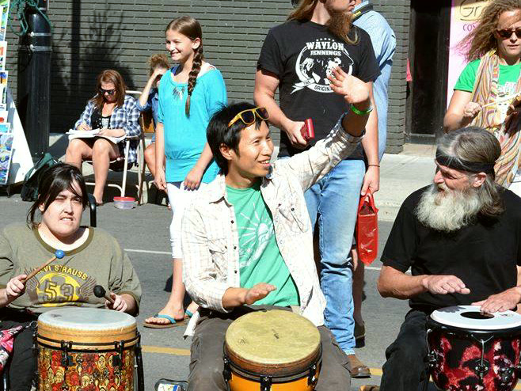
Our approach
Skilled facilitation isn’t a performance.It’s making easier what already wants to happen.We help your group explore their fullest potential.
The 6 C’s are how we draw it out.
Our method
Choose the best fit for your event.
| Aspect | Traditional drumming workshop | Facilitated drum circle |
|---|---|---|
| Focus | Learning set rhythms and their culture | The quality of connection between members of your group |
| The music | Taught by an instructor | An in-the-moment group song, improvised through listening and shared risk |
| The experience | Appreciation of a tradition | Setting the stage to take a safe risk for a greater reward |
| Format | A set program | Meeting and adapting to the energy of the room, with a debrief |
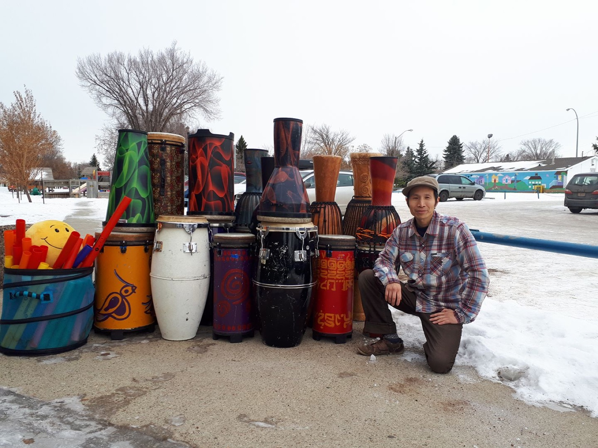
Your facilitator
Marcus Fung is a Chinese born Canadian living in Treaty 6 territory, Amiskwaciy Waskahikan, Cree for Beaver Hills, now known as Edmonton. He is a classically trained pianist and a graduate of Grant MacEwan College holding diplomas in Music Composition and Jazz Piano performance. He began a mentorship and career specializing as an early music and movement teacher with Music Together of the Northern Lights. He later learned to weave his love for music with inclusion, going on to work with peoples of many backgrounds, ages and abilities. He developed his understanding of working inter-modally studying Expressive Art Therapy.
For more than 20 years and 1,000+ circles, from boardrooms to care homes to cancer care, Marcus has facilitated rhythm using Arthur Hull’s drum circle facilitation methodology, blended with his own approach.
He continues to foster his interest in the transformative possibilities of sound therapy and the healing arts. He continues to learn and grow in his community where he likes to refer to himself as a re-generative culture artist.
Beyond the drum
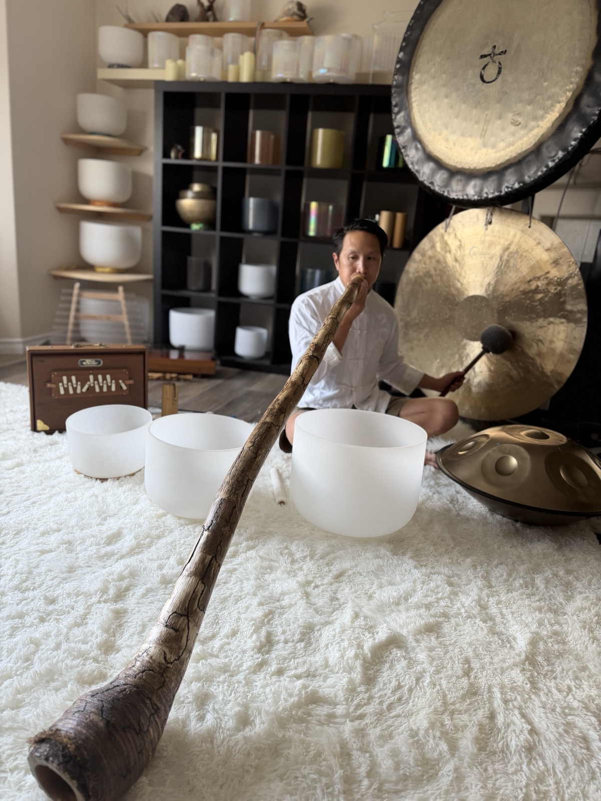
Sound healing with crystal and Tibetan singing bowls and gongs. Therapeutic and healing sounds to accompany yoga classes, meditations or other special events.
Sound baths and gong journeys are offered through Marcus's sister practice, Earth Harmony Sound & Wellness →
Laughter Yoga is a form of personal and social exercise, which benefits the body, mind and spirit. It pairs the practice of laughter exercises with deep yogic breathing.
As soon as one begins to laugh, an instantaneous positive shift begins to occur. The entire body and cellular structure begins to become oxygenated. A sense of playfulness, release and levity is invoked.
There is a positive shift in emotions and outlook. Laughter stimulates the parasympathetic nervous system (PSNS), "rest" and "digest", the complement of the sympathetic nervous system (SNS), fight or flight.
You get a chance to not take yourself so seriously, PLAY and be silly.
Your body does not recognize the difference between laughter as exercise and laughter stimulated by humour.
Laughter is C O N T A G I O U S.
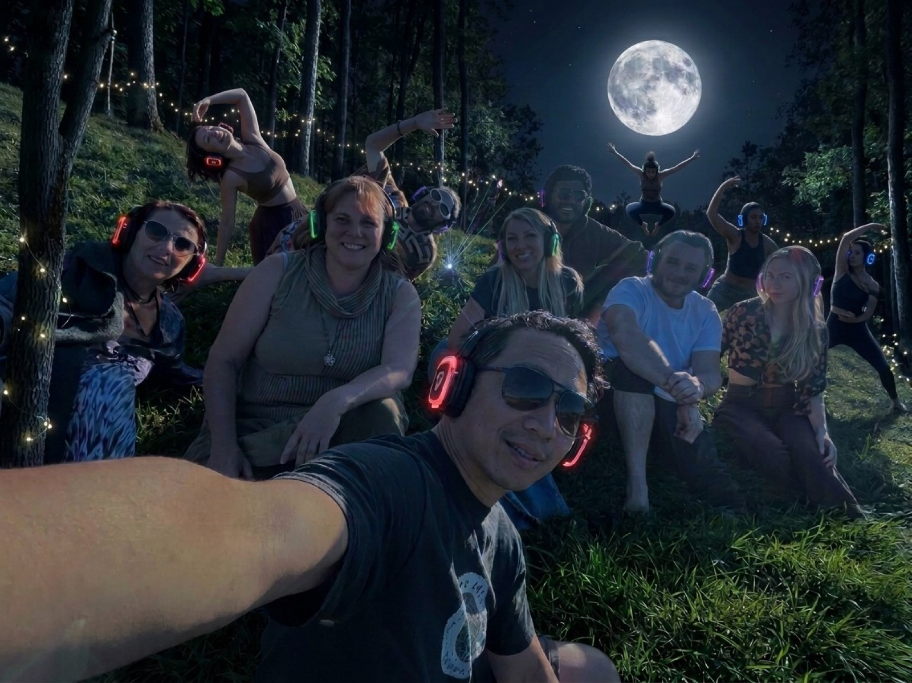
Silent disco events and Music Movement Medicine. Creative movement for all ages.
Contact & quotes
Tell us about your group and your event — we'll shape the circle around it.